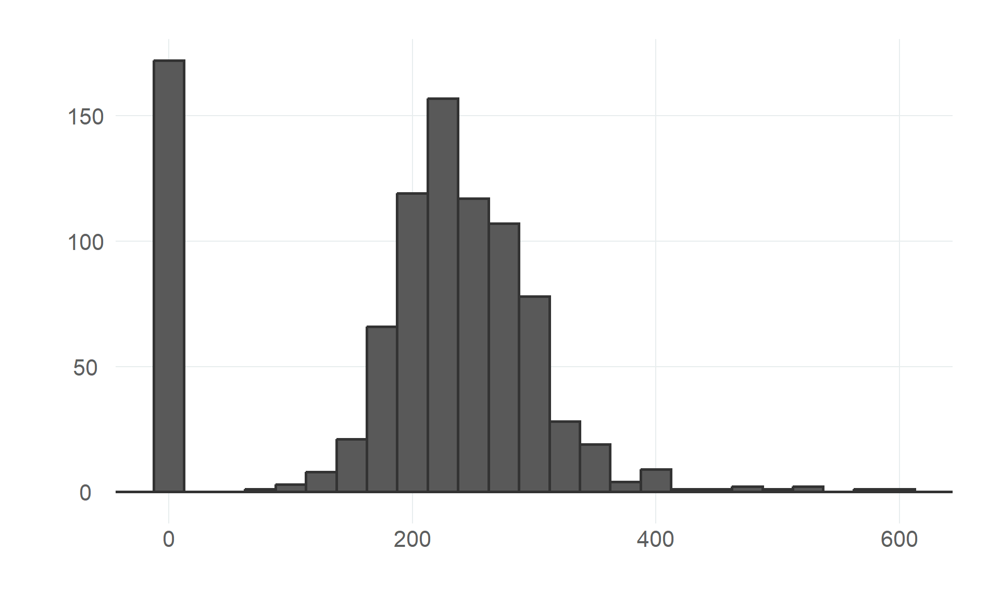
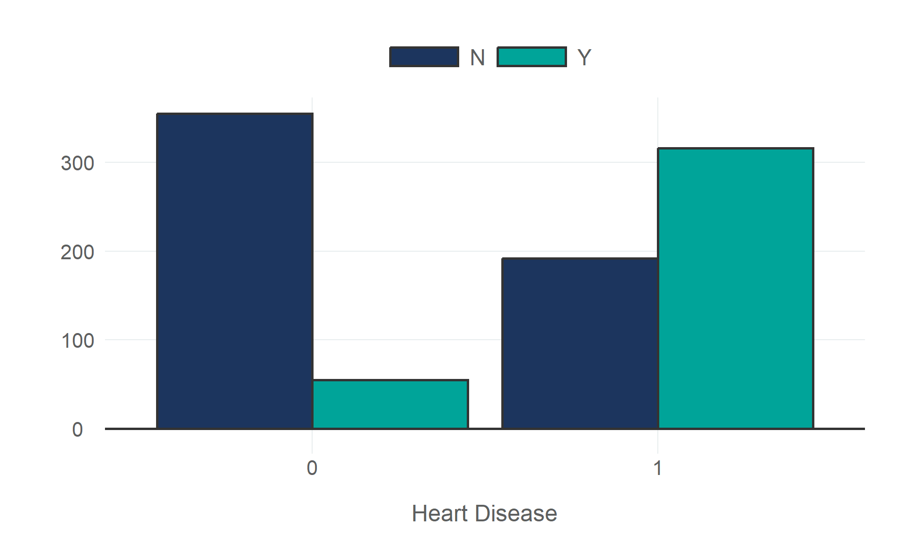
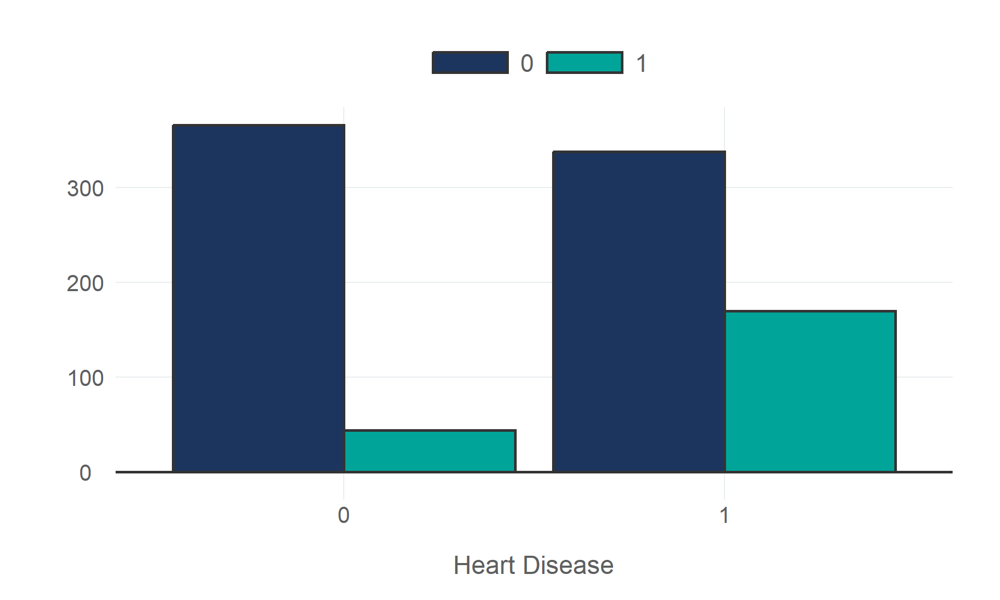
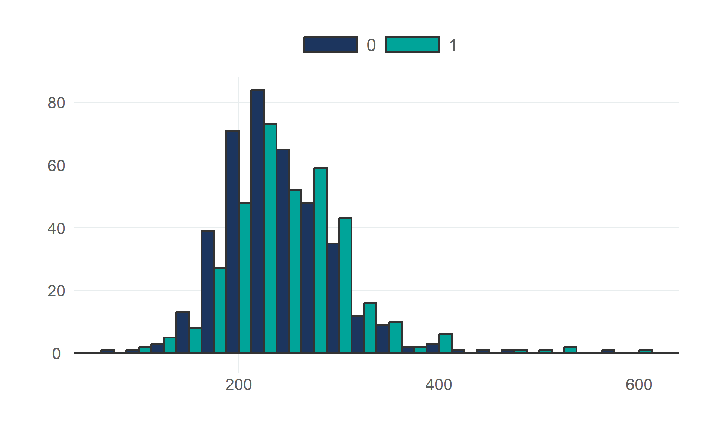
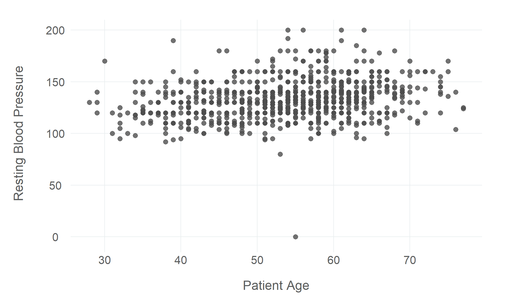

Exploratory data analysis (EDA) is the process of inspecting, visualising, and summarising a dataset. It is the first step in any data science project, and the importance of EDA can often be overlooked. Without exploring the data, it is difficult to know how to construct a piece of analysis or a model, and it is difficult to know if the data is suitable for the task at hand. As a critical step in the data science workflow, it is important to spend time on EDA and to be thorough and methodical in the process. While EDA is often the most time-consuming step in an analysis, taking the time to explore the data can save time in the long run.
EDA is an iterative process. In this tutorial, we will use the dplyr and ggplot2 packages to explore a dataset containing information about heart disease. We will start by inspecting the data itself, to get a sense of the structure and the components of the dataset, and to identify any data quality issues (such as missing values). We will then compute summary statistics to get a better understanding of the distribution and central tendency of the variables that are relevant to the analysis. Finally, we will use data visualisations to explore specific variables in more detail, and to identify any interesting relationships between variables.
5.1 Inspecting the Data
The first step when doing EDA is to inspect the data itself and get an idea of the structure of the dataset, the variable types, and the typical values of each variable. This gives a better understanding of exactly what data is being used and informs decisions both about the next steps in the exploratory process and any modelling choices.
We can use the head() and glimpse() functions to get a sense of the structure of the data. The head() function returns the first five rows of the data, and glimpse() returns a summary of the data, including the number of rows, the number of columns, the column names, the data type of each column, and the first few rows of the data. In addition to these two methods, we can use the distinct() function to get a list of all unique values of a particular variable. This is useful for discrete variables, such as the outcome variable, which can take on a limited number of values. For continuous variables (or any variables with a large number of unique values) the output of distinct() (a tibble) can be difficult to read, so we can use the unique() function to get a list of all unique values, which will be returned as a vector.
# A tibble: 6 × 10
age sex resting_bp cholesterol fasting_bs resting_ecg max_hr angina
<dbl> <fct> <dbl> <dbl> <fct> <fct> <dbl> <fct>
1 40 M 140 289 0 Normal 172 N
2 49 F 160 180 0 Normal 156 N
3 37 M 130 283 0 ST 98 N
4 48 F 138 214 0 Normal 108 Y
5 54 M 150 195 0 Normal 122 N
6 39 M 120 339 0 Normal 170 N
# ℹ 2 more variables: heart_peak_reading <dbl>, heart_disease <fct>
Summary statistics are a quick and easy way to get a sense of the distribution, central tendency, and dispersion of the variables in the dataset. We can use the summary() function to get a summary of the data, including the mean and median values, the 1st and 3rd quartiles, and the minimum and maximum values of each numeric column. It also returns the count values for each factor column, and the number of NA values for each column.
While the base summary() function is pretty effective and works right out of the box, the package skimr can provide a more detailed summary of the data, using the skim() function. If you are looking for a single function to capture the entire process of inspecting the data and computing summary statistics, skim() is the function for the job, giving you a wealth of information about the dataset as a whole and each variable in the data.
If we want to examine a particular variable, the functions mean(), median(), quantile(), min(), and max() will return the same information as the summary() function. We can also get a sense of dispersion by computing the standard deviation or variance of a variable. The sd() function returns the standard deviation of a variable, and the var() function returns the variance.
Finally, we can use the count() function to get a count of the number of observations in each category of a discrete variable. Proportions can also be computed by dividing the count by the total number of observations. Using the group_by() function to group the data by a particular variable, and the mutate() function to add a new column to the data, we can compute the proportion as n/sum(n).
# A tibble: 6 × 4
# Groups: resting_ecg [3]
resting_ecg heart_disease n freq
<fct> <fct> <int> <dbl>
1 LVH 0 82 0.436
2 LVH 1 106 0.564
3 Normal 0 267 0.484
4 Normal 1 285 0.516
5 ST 0 61 0.343
6 ST 1 117 0.657
5.3 Data Visualisation
While inspecting the data directly and using summary statistics to describe it is a good first step, data visualisation is a more effective way to explore the data. It allows us to quickly identify patterns and relationships in the data, and to identify any data quality issues that might not be immediately obvious without a visual representation of the data.
When using data visualisation for exploratory purposes, the intent is generally to visualise the way data is distributed, both within and between variables. This can be done using a variety of different types of plots, including histograms, bar charts, box plots, scatter plots, and line plots. How variables are distributed can tell us a lot about the variable itself, and how variables are distributed relative to each other can tell us a lot about the potential relationship between the variables.
In this tutorial, we will use the ggplot2 package to create a series of data visualisations to explore the data in more detail. ggplot2 is an incredibly flexible and powerful package for creating data visualisations. While it can be a little difficult to make sense of the syntax at first, it is well worth the effort to learn how to use it. Learning how to use ggplot2 is beyond the scope of this tutorial, but there are a number of excellent resources available online, including the [ggplot2][ggplot2 documentation].
5.3.1 Visualising Data Distributions
The first step in the exploratory process is to visualise the data distributions of key variables in the dataset. This allows us to get a sense of the typical values and central tendency of the variable, as well as identifying any outliers or other data quality issues.
5.3.1.1 Continuous Distributions
For continuous variables, we can use histograms to visualise the distribution of the data. We can use the geom_histogram() function to create a histogram of a continuous variable. The binwidth argument can be used to control the width of the bins in the histogram.
# age distributiondf|>ggplot(aes(age))+geom_histogram(binwidth =5, colour ="#333333", linewidth =1)+geom_hline(yintercept =0, colour ="#333333", linewidth =1)+labs(x =NULL, y =NULL)# max hr distributiondf|>ggplot(aes(max_hr))+geom_histogram(binwidth =10, colour ="#333333", linewidth =1)+geom_hline(yintercept =0, colour ="#333333", linewidth =1)+labs(x =NULL, y =NULL)# cholesterol distributiondf|>ggplot(aes(cholesterol))+geom_histogram(binwidth =25, colour ="#333333", linewidth =1)+geom_hline(yintercept =0, colour ="#333333", linewidth =1)+labs(x =NULL, y =NULL)
(a) Age
(b) Maximum Heart Rate

(c) Cholesterol
Figure 5.1: Histograms plotting the distributions of relevant variables from the heart disease dataset.
# filter zero valuesdf|>filter(cholesterol!=0)|>ggplot(aes(cholesterol))+geom_histogram(binwidth =25, colour ="#333333", linewidth =1)+geom_hline(yintercept =0, colour ="#333333", linewidth =1)+labs(x ="Cholesterol", y =NULL)
Figure 5.2: The distribution of cholesterol readings, with zero values filtered out to better visualise the non-zero distribution.
The inflated zero values in the cholesterol distribution suggests that there may be an issue with data quality that needs addressing.
5.3.1.2 Discrete Distributions
We can use bar charts to visualise the distribution of discrete variables. We can use the geom_bar() function to create a bar chart of a discrete variable.
# sex distributiondf|>ggplot(aes(sex))+geom_bar(colour ="#333333", linewidth =1)+geom_hline(yintercept =0, colour ="#333333", linewidth =1)+labs(x =NULL, y =NULL)# angina distributiondf|>ggplot(aes(angina))+geom_bar(colour ="#333333", linewidth =1)+geom_hline(yintercept =0, colour ="#333333", linewidth =1)+labs(x =NULL, y =NULL)
(a) Patient Sex
(b) Angina
Figure 5.3: Bar charts plotting discrete variables from the heart disease dataset.
Figure 5.4: The distribution of the outcome variable, heart disease.
5.3.2 Comparing Distributions
There are a number of ways to compare the distributions of multiple variables. Bar charts can be used to visualise two discrete variables, while histograms and box plots are useful for comparing the distribution of a continuous variable across the groups of a discrete variable, and scatter plots are particularly useful for comparing the distribution of two continuous variables.
5.3.2.1 Visualising Multiple Discrete Variables
Bar charts are an effective way to visualize the observed relationship (or association, at least) between a discrete explanatory variable and a discrete outcome (whether binary, ordinal, or categorical).
We can use the geom_bar() function to create bar charts, but the default behaviour is to display the bars as stacked bars, which is not necessarily ideal for visualising discrete variables (though I’d recommend playing around with this yourself to decide what works in each case)
The position argument controls how the bars are displayed. The default position = 'stack' argument will display the bars as stacked bars, while the position = 'dodge' argument will display the bars side-by-side, and the position = 'fill' argument will display the bars as a proportion of the total number of observations in each category.
Finally, the fill argument splits the bars by a particular variable and display them in different colours.
# heart disease by sexdf|>ggplot(aes(heart_disease, fill =sex))+geom_bar(position ='dodge', colour ="#333333", linewidth =1)+geom_hline(yintercept =0, colour ="#333333", linewidth =1)+scale_fill_qualitative(palette ="scw")+labs(x ="Heart Disease", y =NULL)# resting ecgdf|>ggplot(aes(heart_disease, fill =resting_ecg))+geom_bar(position ='dodge', colour ="#333333", linewidth =1)+geom_hline(yintercept =0, colour ="#333333", linewidth =1)+scale_fill_qualitative(palette ="scw")+labs(x ="Heart Disease", y =NULL)# anginadf|>ggplot(aes(heart_disease, fill =angina))+geom_bar(position ='dodge', colour ="#333333", linewidth =1)+geom_hline(yintercept =0, colour ="#333333", linewidth =1)+scale_fill_qualitative(palette ="scw")+labs(x ="Heart Disease", y =NULL)# fasting bsdf|>ggplot(aes(heart_disease, fill =fasting_bs))+geom_bar(position ='dodge', colour ="#333333", linewidth =1)+geom_hline(yintercept =0, colour ="#333333", linewidth =1)+scale_fill_qualitative(palette ="scw")+labs(x ="Heart Disease", y =NULL)
(a) Patient Sex
(b) Resting ECG

(c) Angina

(d) Fasting Blood Sugar
Figure 5.5: Bar charts plotting discrete variables from the heart disease dataset against the outcome variable, heart disease.
5.3.2.2 Visualising A Continuous Variable Across Discrete Groups
Histograms and box plots are useful for comparing the distribution of a continuous variable across the groups of a discrete variable.
5.3.2.2.1 Histogram Plots
We can use the geom_histogram() function to create histograms. The fill and position arguments can be used to split the bars by a particular variable and display them in different colours, as discussed above.
# age distribution by heart diseasedf|>ggplot(aes(age, fill =heart_disease))+geom_histogram( binwidth =5, position ='dodge', colour ="#333333", linewidth =1)+geom_hline(yintercept =0, colour ="#333333", linewidth =1)+scale_fill_qualitative(palette ="scw")+labs(x =NULL, y =NULL)# filter zero valuesdf|>filter(cholesterol!=0)|>ggplot(aes(cholesterol, fill =heart_disease))+geom_histogram( binwidth =25, position ='dodge', colour ="#333333", linewidth =1)+geom_hline(yintercept =0, colour ="#333333", linewidth =1)+scale_fill_qualitative(palette ="scw")+labs(x =NULL, y =NULL)
(a) Patient Age by Heart Disease

(b) Cholesterol (Zero Values Filtered) by Heart Disease
Figure 5.6: Histograms plotting the distribution of continuous variables from the heart disease dataset against the outcome variable, heart disease.
The fact that there is a significantly larger proportion of positive heart disease cases in the zero cholesterol values further demonstrates the need to address this data quality issue.
5.3.2.2.2 Box Plots
Box plots visualize the characteristics of a continuous distribution over discrete groups. We can use the geom_boxplot() function to create box plots, and the fill() argument to split the box plots by a particular variable and display them in different colours.
However, while box plots can be very useful, they are not always the most effective way of visualising this information, as explained here by Cedric Scherer. This guide uses box plots for the sake of simplicity, but it is worth considering other options when visualising distributions.
Figure 5.7: Box plots visualising continuous distributions over the discrete outcome variable, heart disease.
5.3.2.3 Visualising Multiple Discrete Variables
Scatter plots are an effective way to visualize how two continuous variables vary together. We can use the geom_point() function to create scatter plots, and the colour argument to split the scatter plots by a particular variable and display them in different colours.
# age & resting bpdf|>ggplot(aes(age, resting_bp))+geom_point(alpha =0.8, size =3, colour ='gray30')+labs(x ="Patient Age", y ="Resting Blood Pressure")# filter zero valuesdf|>filter(resting_bp!=0)|>ggplot(aes(age, resting_bp))+geom_point(alpha =0.8, size =3, colour ='gray30')+labs(x ="Patient Age", y ="Resting Blood Pressure")# age & cholesteroldf|>filter(cholesterol!=0)|>ggplot(aes(age, cholesterol))+geom_point(alpha =0.8, size =3, colour ='gray30')+labs(x ="Patient Age", y ="Cholesterol")# age & max hrdf|>ggplot(aes(age, max_hr))+geom_point(alpha =0.8, size =3, colour ='gray30')+labs(x ="Patient Age", y ="Maximum Heart Rate")

(a) Patient Age & Resting Blood Pressure
(b) Patient Age & Resting Blood Pressure (Zero Values Filtered)
(c) Patient Age & Cholesterol (Zero Values Filtered)
(d) Patient Age & Maximum Heart Rate
Figure 5.8: Scatter plots visualising two continuous distributions together.
The scatter plot visualising age and resting blood pressure highlights another observation that needs to be removed due to data quality issues.
If there appears to be an association between the two continuous variables that you have plotted, as is the case with age and maximum heart rate in the above plot, you can also add a regression line to visualize the strength of that association. The geom_smooth() function can be used to add a regression line to a scatter plot. The method argument specifies the type of regression line to be added, and the se argument specifies whether or not to display the standard error of the regression line.
# age & max hrdf|>ggplot(aes(age, max_hr))+geom_point(alpha =0.8, size =3, colour ='gray30')+geom_smooth(method =lm, se =FALSE, size =2, colour='#005EB8')+labs(x ="Patient Age", y ="Maximum Heart Rate")
Figure 5.9: Scatter plot visualising the distribution of patient age and maximum heart rate with a regression line fit to the data.
You can also include discrete variables by assigning the discrete groups different colours in the scatter plot, and if you add regression lines to these plots, separate regression lines will be fit to the discrete groups. This can be useful for visualising how the association between the two continuous variables varies across the discrete groups.
# age & resting bp, split by heart diseasedf|>filter(resting_bp!=0)|>ggplot(aes(age, resting_bp, colour =heart_disease))+geom_point(alpha =0.8, size =3)+scale_colour_qualitative(palette ="scw")+labs(x ="Patient Age", y ="Resting Blood Pressure")# age & cholesterol, split by heart disease (with regression line)df|>filter(cholesterol!=0)|>ggplot(aes(age, cholesterol, colour =heart_disease))+geom_point(size =3, alpha =0.8)+geom_smooth(method =lm, se =FALSE, size =1.5)+scale_colour_qualitative(palette ="scw")+labs(x ="Patient Age", y ="Resting Blood Pressure")# age & max hr, split by heart disease (with regression line)df|>ggplot(aes(age, max_hr, colour =heart_disease))+geom_point(size =3, alpha =0.8)+geom_smooth(method =lm, se =FALSE, size =1.5)+scale_colour_qualitative(palette ="scw")+labs(x ="Patient Age", y ="Maximum Heart Rate")
(a) Patient Age & Resting Blood Pressure
(b) Patient Age & Cholesterol (Zero Values Filtered)
(c) Patient Age & Maximum Heart Rate
Figure 5.10: Scatter plots visualising continuous distributions together, with the data split and coloured by the discrete outcome variable, heart disease.
5.4 Next Steps
There are many more visualisation techniques that you can use to explore your data, and you can find a comprehensive list of them on the [geoms][ggplot2 function reference] page. There are also a wide variety of [ggplot extensions][ggplot extension packages] that can be used to create more complex visualisations.
The next step in the data science process is to build a model to either explain or predict the outcome variable, heart disease. The exploratory work done here can help inform decisions about the choice of the model, and the choice of the variables that will be used to build the model. It will also help clean up the data, particularly the zero values in the cholesterol and resting blood pressure variables, to ensure that the model is built on the best possible data.
5.5 Resources
There are a wealth of resources available to help you learn more about data visualisation.
# Exploratory Data Analysis {#sec-eda}{{< include _links.qmd >}}```{r}#| label: setup#| cache: false#| output: false#| code-fold: true#| code-summary: 'Setup Code (Click to Expand)'# packages needed to run the code in this section# install.packages(c("dplyr", "skimr", "janitor", "MLDataR", "ggplot2", "remotes"))# remotes::install_github("NHS-South-Central-and-West/scwplot")# import packagessuppressPackageStartupMessages({library(dplyr)library(ggplot2)library(scwplot)})# set plot themetheme_set(scwplot::theme_scw(base_size =16))# import datadf <- MLDataR::heartdisease |> janitor::clean_names()# convert discrete variables to factor typedf <- df |>mutate(sex =as.factor(sex),fasting_bs =as.factor(fasting_bs),resting_ecg =as.factor(resting_ecg),angina =as.factor(angina),heart_disease =as.factor(heart_disease) )```Exploratory data analysis (EDA) is the process of inspecting, visualising, and summarising a dataset. It is the first step in any data science project, and the importance of EDA can often be overlooked. Without exploring the data, it is difficult to know how to construct a piece of analysis or a model, and it is difficult to know if the data is suitable for the task at hand. As a critical step in the data science workflow, it is important to spend time on EDA and to be thorough and methodical in the process. While EDA is often the most time-consuming step in an analysis, taking the time to explore the data can save time in the long run.EDA is an iterative process. In this tutorial, we will use the `dplyr` and `ggplot2` packages to explore a dataset containing information about heart disease. We will start by inspecting the data itself, to get a sense of the structure and the components of the dataset, and to identify any data quality issues (such as missing values). We will then compute summary statistics to get a better understanding of the distribution and central tendency of the variables that are relevant to the analysis. Finally, we will use data visualisations to explore specific variables in more detail, and to identify any interesting relationships between variables.## Inspecting the DataThe first step when doing EDA is to inspect the data itself and get an idea of the structure of the dataset, the variable types, and the typical values of each variable. This gives a better understanding of exactly what data is being used and informs decisions both about the next steps in the exploratory process and any modelling choices.We can use the `head()` and `glimpse()` functions to get a sense of the structure of the data. The `head()` function returns the first five rows of the data, and `glimpse()` returns a summary of the data, including the number of rows, the number of columns, the column names, the data type of each column, and the first few rows of the data. In addition to these two methods, we can use the `distinct()` function to get a list of all unique values of a particular variable. This is useful for discrete variables, such as the outcome variable, which can take on a limited number of values. For continuous variables (or any variables with a large number of unique values) the output of `distinct()` (a tibble) can be difficult to read, so we can use the `unique()` function to get a list of all unique values, which will be returned as a vector.```{r}#| label: explore# view first rows in the datasethead(df)# overview of the dataglimpse(df)# unique values of the outcome variabledf |>distinct(heart_disease)# unique values of a continuous explanatory variableunique(df$cholesterol)```## Summary StatisticsSummary statistics are a quick and easy way to get a sense of the distribution, central tendency, and dispersion of the variables in the dataset. We can use the `summary()` function to get a summary of the data, including the mean and median values, the 1st and 3rd quartiles, and the minimum and maximum values of each numeric column. It also returns the count values for each factor column, and the number of NA values for each column.While the base `summary()` function is pretty effective and works right out of the box, the package `skimr` can provide a more detailed summary of the data, using the `skim()` function. If you are looking for a single function to capture the entire process of inspecting the data and computing summary statistics, `skim()` is the function for the job, giving you a wealth of information about the dataset as a whole and each variable in the data.If we want to examine a particular variable, the functions `mean()`, `median()`, `quantile()`, `min()`, and `max()` will return the same information as the `summary()` function. We can also get a sense of dispersion by computing the standard deviation or variance of a variable. The `sd()` function returns the standard deviation of a variable, and the `var()` function returns the variance.Finally, we can use the `count()` function to get a count of the number of observations in each category of a discrete variable. Proportions can also be computed by dividing the count by the total number of observations. Using the `group_by()` function to group the data by a particular variable, and the `mutate()` function to add a new column to the data, we can compute the proportion as `n/sum(n)`.```{r}#| label: summary-stats# summary of the datasummary(df)# more detailed summary of the dataskimr::skim(df)# mean agemean(df$age)# median agemedian(df$age)# min and max agemin(df$age)max(df$age)# dispersion of agesd(df$age)var(df$age)# heart disease countdf |>count(heart_disease)# resting ecg countdf |>count(resting_ecg)# anginadf |>count(angina)# cholesteroldf |>count(cholesterol)# heart disease proportiondf |>group_by(resting_ecg) |>count(heart_disease) |>mutate(freq = n/sum(n))```## Data VisualisationWhile inspecting the data directly and using summary statistics to describe it is a good first step, data visualisation is a more effective way to explore the data. It allows us to quickly identify patterns and relationships in the data, and to identify any data quality issues that might not be immediately obvious without a visual representation of the data.When using data visualisation for exploratory purposes, the intent is generally to visualise the way data is distributed, both within and between variables. This can be done using a variety of different types of plots, including histograms, bar charts, box plots, scatter plots, and line plots. How variables are distributed can tell us a lot about the variable itself, and how variables are distributed relative to each other can tell us a lot about the potential relationship between the variables.In this tutorial, we will use the `ggplot2` package to create a series of data visualisations to explore the data in more detail. `ggplot2` is an incredibly flexible and powerful package for creating data visualisations. While it can be a little difficult to make sense of the syntax at first, it is well worth the effort to learn how to use it. Learning how to use `ggplot2` is beyond the scope of this tutorial, but there are a number of excellent resources available online, including the [ggplot2][ggplot2 documentation].### Visualising Data DistributionsThe first step in the exploratory process is to visualise the data distributions of key variables in the dataset. This allows us to get a sense of the typical values and central tendency of the variable, as well as identifying any outliers or other data quality issues.#### Continuous DistributionsFor continuous variables, we can use histograms to visualise the distribution of the data. We can use the `geom_histogram()` function to create a histogram of a continuous variable. The `binwidth` argument can be used to control the width of the bins in the histogram.```{r}#| label: fig-continuous-dists#| layout-ncol: 3#| column: screen-inset#| fig-cap: |#| Histograms plotting the distributions of relevant variables from the heart#| disease dataset.#| fig-subcap: #| - Age#| - Maximum Heart Rate#| - Cholesterol# age distributiondf |>ggplot(aes(age)) +geom_histogram(binwidth =5, colour ="#333333", linewidth =1) +geom_hline(yintercept =0, colour ="#333333", linewidth =1) +labs(x =NULL, y =NULL)# max hr distributiondf |>ggplot(aes(max_hr)) +geom_histogram(binwidth =10, colour ="#333333", linewidth =1) +geom_hline(yintercept =0, colour ="#333333", linewidth =1) +labs(x =NULL, y =NULL)# cholesterol distributiondf |>ggplot(aes(cholesterol)) +geom_histogram(binwidth =25, colour ="#333333", linewidth =1) +geom_hline(yintercept =0, colour ="#333333", linewidth =1) +labs(x =NULL, y =NULL)``````{r}#| label: fig-filter-zeroes-cholesterol-dist#| fig-cap: |#| The distribution of cholesterol readings, with zero values filtered out to #| better visualise the non-zero distribution.# filter zero valuesdf |>filter(cholesterol !=0) |>ggplot(aes(cholesterol)) +geom_histogram(binwidth =25, colour ="#333333", linewidth =1) +geom_hline(yintercept =0, colour ="#333333", linewidth =1) +labs(x ="Cholesterol", y =NULL)```The inflated zero values in the cholesterol distribution suggests that there may be an issue with data quality that needs addressing.#### Discrete DistributionsWe can use bar charts to visualise the distribution of discrete variables. We can use the `geom_bar()` function to create a bar chart of a discrete variable.```{r}#| label: fig-discrete-dists#| column: page#| layout-ncol: 2#| fig-cap: |#| Bar charts plotting discrete variables from the heart disease dataset.#| fig-subcap: #| - Patient Sex#| - Angina# sex distributiondf |>ggplot(aes(sex)) +geom_bar(colour ="#333333", linewidth =1) +geom_hline(yintercept =0, colour ="#333333", linewidth =1) +labs(x =NULL, y =NULL)# angina distributiondf |>ggplot(aes(angina)) +geom_bar(colour ="#333333", linewidth =1) +geom_hline(yintercept =0, colour ="#333333", linewidth =1) +labs(x =NULL, y =NULL)``````{r}#| label: fig-heart-disease-dist#| fig-cap: |#| The distribution of the outcome variable, heart disease.# heart disease distributiondf |>ggplot(aes(heart_disease)) +geom_bar(colour ="#333333", linewidth =1) +geom_hline(yintercept =0, colour ="#333333", linewidth =1) +labs(x ="Heart Disease", y =NULL)```### Comparing DistributionsThere are a number of ways to compare the distributions of multiple variables. Bar charts can be used to visualise two discrete variables, while histograms and box plots are useful for comparing the distribution of a continuous variable across the groups of a discrete variable, and scatter plots are particularly useful for comparing the distribution of two continuous variables.#### Visualising Multiple Discrete VariablesBar charts are an effective way to visualize the observed relationship (or association, at least) between a discrete explanatory variable and a discrete outcome (whether binary, ordinal, or categorical).We can use the `geom_bar()` function to create bar charts, but the default behaviour is to display the bars as stacked bars, which is not necessarily ideal for visualising discrete variables (though I'd recommend playing around with this yourself to decide what works in each case)The `position` argument controls how the bars are displayed. The default `position = 'stack'` argument will display the bars as stacked bars, while the `position = 'dodge'` argument will display the bars side-by-side, and the `position = 'fill'` argument will display the bars as a proportion of the total number of observations in each category.Finally, the `fill` argument splits the bars by a particular variable and display them in different colours.```{r}#| label: fig-multi-discrete-dists#| column: page#| layout-ncol: 2#| layout-nrow: 2#| fig-cap: |#| Bar charts plotting discrete variables from the heart disease dataset #| against the outcome variable, heart disease.#| fig-subcap: #| - Patient Sex#| - Resting ECG#| - Angina#| - Fasting Blood Sugar# heart disease by sexdf |>ggplot(aes(heart_disease, fill = sex)) +geom_bar(position ='dodge', colour ="#333333", linewidth =1) +geom_hline(yintercept =0, colour ="#333333", linewidth =1) +scale_fill_qualitative(palette ="scw") +labs(x ="Heart Disease", y =NULL)# resting ecgdf |>ggplot(aes(heart_disease, fill = resting_ecg)) +geom_bar(position ='dodge', colour ="#333333", linewidth =1) +geom_hline(yintercept =0, colour ="#333333", linewidth =1) +scale_fill_qualitative(palette ="scw") +labs(x ="Heart Disease", y =NULL)# anginadf |>ggplot(aes(heart_disease, fill = angina)) +geom_bar(position ='dodge', colour ="#333333", linewidth =1) +geom_hline(yintercept =0, colour ="#333333", linewidth =1) +scale_fill_qualitative(palette ="scw") +labs(x ="Heart Disease", y =NULL)# fasting bsdf |>ggplot(aes(heart_disease, fill = fasting_bs)) +geom_bar(position ='dodge', colour ="#333333", linewidth =1) +geom_hline(yintercept =0, colour ="#333333", linewidth =1) +scale_fill_qualitative(palette ="scw") +labs(x ="Heart Disease", y =NULL)```#### Visualising A Continuous Variable Across Discrete GroupsHistograms and box plots are useful for comparing the distribution of a continuous variable across the groups of a discrete variable.##### Histogram PlotsWe can use the `geom_histogram()` function to create histograms. The `fill` and `position` arguments can be used to split the bars by a particular variable and display them in different colours, as discussed above.```{r}#| label: fig-continuous-discrete-dists#| column: page#| layout-ncol: 2#| fig-cap: |#| Histograms plotting the distribution of continuous variables from the heart#| disease dataset against the outcome variable, heart disease.#| fig-subcap: #| - Patient Age by Heart Disease#| - Cholesterol (Zero Values Filtered) by Heart Disease# age distribution by heart diseasedf |>ggplot(aes(age, fill = heart_disease)) +geom_histogram(binwidth =5, position ='dodge', colour ="#333333", linewidth =1 ) +geom_hline(yintercept =0, colour ="#333333", linewidth =1) +scale_fill_qualitative(palette ="scw") +labs(x =NULL, y =NULL)# filter zero valuesdf |>filter(cholesterol !=0) |>ggplot(aes(cholesterol, fill = heart_disease)) +geom_histogram(binwidth =25, position ='dodge', colour ="#333333", linewidth =1 ) +geom_hline(yintercept =0, colour ="#333333", linewidth =1) +scale_fill_qualitative(palette ="scw") +labs(x =NULL, y =NULL)```The fact that there is a significantly larger proportion of positive heart disease cases in the zero cholesterol values further demonstrates the need to address this data quality issue.##### Box PlotsBox plots visualize the characteristics of a continuous distribution over discrete groups. We can use the `geom_boxplot()` function to create box plots, and the `fill()` argument to split the box plots by a particular variable and display them in different colours.However, while box plots can be very useful, they are not always the most effective way of visualising this information, as explained [here][boxplots] by Cedric Scherer. This guide uses box plots for the sake of simplicity, but it is worth considering other options when visualising distributions.```{r}#| label: fig-box-plots#| column: page#| layout-ncol: 2#| layout-nrow: 2#| fig-cap: |#| Box plots visualising continuous distributions over the discrete outcome #| variable, heart disease.#| fig-subcap: #| - Patient Age#| - Patient Age, Split by Sex#| - Maximum Heart Rate#| - Maximum Heart Rate, Split by Sex# age & heart diseasedf |>ggplot(aes(age, heart_disease)) +geom_boxplot(size=0.8) +scale_fill_qualitative(palette ="scw") +labs(x ="Patient Age", y ="Heart Disease")# age & heart disease, split by sexdf |>ggplot(aes(age, heart_disease, fill = sex)) +geom_boxplot(size=0.8) +scale_fill_qualitative(palette ="scw") +labs(x ="Patient Age", y ="Heart Disease")# max hr & heart diseasedf |>ggplot(aes(max_hr, heart_disease)) +geom_boxplot(size=0.8) +scale_fill_qualitative(palette ="scw") +labs(x ="Maximum Heart Rate", y ="Heart Disease")# max hr & heart disease, split by sexdf |>ggplot(aes(max_hr, heart_disease, fill = sex)) +geom_boxplot(size=0.8) +scale_fill_qualitative(palette ="scw") +labs(x ="Maximum Heart Rate", y ="Heart Disease")```#### Visualising Multiple Discrete VariablesScatter plots are an effective way to visualize how two continuous variables vary together. We can use the `geom_point()` function to create scatter plots, and the `colour` argument to split the scatter plots by a particular variable and display them in different colours.```{r}#| label: fig-scatter-plots#| column: page#| layout-ncol: 2#| layout-nrow: 2#| fig-cap: |#| Scatter plots visualising two continuous distributions together.#| fig-subcap: #| - Patient Age & Resting Blood Pressure#| - Patient Age & Resting Blood Pressure (Zero Values Filtered)#| - Patient Age & Cholesterol (Zero Values Filtered)#| - Patient Age & Maximum Heart Rate# age & resting bpdf |>ggplot(aes(age, resting_bp)) +geom_point(alpha =0.8, size =3, colour ='gray30') +labs(x ="Patient Age", y ="Resting Blood Pressure")# filter zero valuesdf |>filter(resting_bp !=0) |>ggplot(aes(age, resting_bp)) +geom_point(alpha =0.8, size =3, colour ='gray30') +labs(x ="Patient Age", y ="Resting Blood Pressure")# age & cholesteroldf |>filter(cholesterol !=0) |>ggplot(aes(age, cholesterol)) +geom_point(alpha =0.8, size =3, colour ='gray30') +labs(x ="Patient Age", y ="Cholesterol")# age & max hrdf |>ggplot(aes(age, max_hr)) +geom_point(alpha =0.8, size =3, colour ='gray30') +labs(x ="Patient Age", y ="Maximum Heart Rate")```The scatter plot visualising age and resting blood pressure highlights another observation that needs to be removed due to data quality issues.If there appears to be an association between the two continuous variables that you have plotted, as is the case with age and maximum heart rate in the above plot, you can also add a regression line to visualize the strength of that association. The `geom_smooth()` function can be used to add a regression line to a scatter plot. The `method` argument specifies the type of regression line to be added, and the `se` argument specifies whether or not to display the standard error of the regression line.```{r}#| label: fig-scatter-plot-with-regression-line#| fig-cap: |#| Scatter plot visualising the distribution of patient age and maximum heart #| rate with a regression line fit to the data.# age & max hrdf |>ggplot(aes(age, max_hr)) +geom_point(alpha =0.8, size =3, colour ='gray30') +geom_smooth(method = lm, se =FALSE, size =2, colour='#005EB8') +labs(x ="Patient Age", y ="Maximum Heart Rate")```You can also include discrete variables by assigning the discrete groups different colours in the scatter plot, and if you add regression lines to these plots, separate regression lines will be fit to the discrete groups. This can be useful for visualising how the association between the two continuous variables varies across the discrete groups.```{r}#| label: fig-scatter-plots-with-discrete-splits#| column: screen-inset#| layout-ncol: 3#| fig-cap: |#| Scatter plots visualising continuous distributions together, with the data#| split and coloured by the discrete outcome variable, heart disease.#| fig-subcap: #| - Patient Age & Resting Blood Pressure#| - Patient Age & Cholesterol (Zero Values Filtered)#| - Patient Age & Maximum Heart Rate# age & resting bp, split by heart diseasedf |>filter(resting_bp !=0) |>ggplot(aes(age, resting_bp, colour = heart_disease)) +geom_point(alpha =0.8, size =3) +scale_colour_qualitative(palette ="scw") +labs(x ="Patient Age", y ="Resting Blood Pressure")# age & cholesterol, split by heart disease (with regression line)df |>filter(cholesterol!=0) |>ggplot(aes(age, cholesterol, colour = heart_disease)) +geom_point(size =3, alpha =0.8) +geom_smooth(method = lm, se =FALSE, size =1.5) +scale_colour_qualitative(palette ="scw") +labs(x ="Patient Age", y ="Resting Blood Pressure")# age & max hr, split by heart disease (with regression line)df |>ggplot(aes(age, max_hr, colour = heart_disease)) +geom_point(size =3, alpha =0.8)+geom_smooth(method = lm, se =FALSE, size =1.5) +scale_colour_qualitative(palette ="scw") +labs(x ="Patient Age", y ="Maximum Heart Rate")```## Next StepsThere are many more visualisation techniques that you can use to explore your data, and you can find a comprehensive list of them on the [geoms][ggplot2 function reference] page. There are also a wide variety of [ggplot extensions][ggplot extension packages] that can be used to create more complex visualisations.The next step in the data science process is to build a model to either explain or predict the outcome variable, heart disease. The exploratory work done here can help inform decisions about the choice of the model, and the choice of the variables that will be used to build the model. It will also help clean up the data, particularly the zero values in the cholesterol and resting blood pressure variables, to ensure that the model is built on the best possible data.## ResourcesThere are a wealth of resources available to help you learn more about data visualisation.- [Data Visualization: A Practical Introduction]- [Fundamentals of Data Visualization]- [Data Visualization with R]- [{ggeasy} - Easy Access to {ggplot2} Commands]